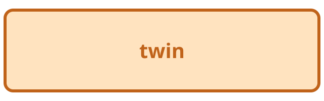

同じ path に別の中身
この deck は sample-static と同じ path に、違う内容のファイルを置いています。
背景が明るい色なら、この deck のファイルです
ページが進まないときは 確認用のページ で touch の記録を見られます。
見分け方

図が橙色で「twin」と書かれていれば、この deck の画像です。
確認用のページ
作者の JS からの操作が止められているかを 確認用のページ で見られます。
このページの番号:
この deck は sample-static と同じ path に、違う内容のファイルを置いています。
背景が明るい色なら、この deck のファイルです
ページが進まないときは 確認用のページ で touch の記録を見られます。

図が橙色で「twin」と書かれていれば、この deck の画像です。
作者の JS からの操作が止められているかを 確認用のページ で見られます。
このページの番号: